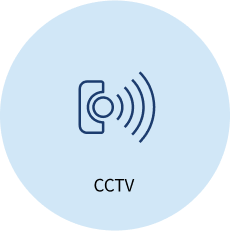
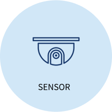
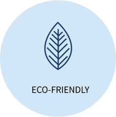

원격 관제시스템Remote Control System
원격 관제시스템은 관제소에 설치된 PC 또는 모바일을 통해 안전게이트 위치 및 상태를 확인하고 열기/닫기/비상 정지 등 원격 제어 기능을 할 수 있는 서비스입니다.
원격 관제시스템은 지도보기 모드와 CCTV보기 모드를 제공하며 지도보기 모드에서는 설치된 전체 안전게이트의 위치와 상태를 한 눈에 파악이 가능하고 CCTV보기 모드에서는 실시간 모니터링이 가능합니다.
지도보기에서는 안전게이트의 위치를 한눈에 확인하고 원하는 안전게이트를 클릭하여 상세보기 및 개폐 실행을 할 수 있습니다.
CCTV 화면에서는 전체 안전게이트의 현황을 실시간으로 확인하고 상황에 필요한 개폐 실행을 즉각 할 수 있습니다.
안전게이트 리스트 화면에서는 지도상에 표시된 안전게이트의 상태를 간편하게 확인하고 개폐를 실행하고자 하는 안전게이트를 여러 개 선택해서 동시에 실행할 수 있습니다.
시스템 구성도
System Configuration Diagram
추가 시스템
Additional System
스마트 안전게이트 원격 관제시스템에 적용 가능한 추가 시스템으로는 CCTV, 수위 센서/인체 감지 센서 그리고 태양광 또는 풍력을 이용한 친환경 에너지 발전기 등이 있습니다.
-

안전 게이트가 설치된 진출입로 주변에 전용 CCTV를 설치하여 원격 관제시스템에서 진출입로의 상황을 실시간으로 모니터링할 수 있습니다.
-

보조 시스템으로 설치 가능한 센서로는 하천 수면의 높이를 측정하는 수위 센서와 안전게이트 주변 진출입로에 사람을 감지하는 인체 감지 센서가 있습니다.
-

산악도로, 등산로 등 전기 및 유선 통신 설비의 설치가 어려운 곳에 태양광 또는 풍력 스마트 게이트를 설치하여 차수문, 진입 차단문 등을 운영할 수 있습니다.